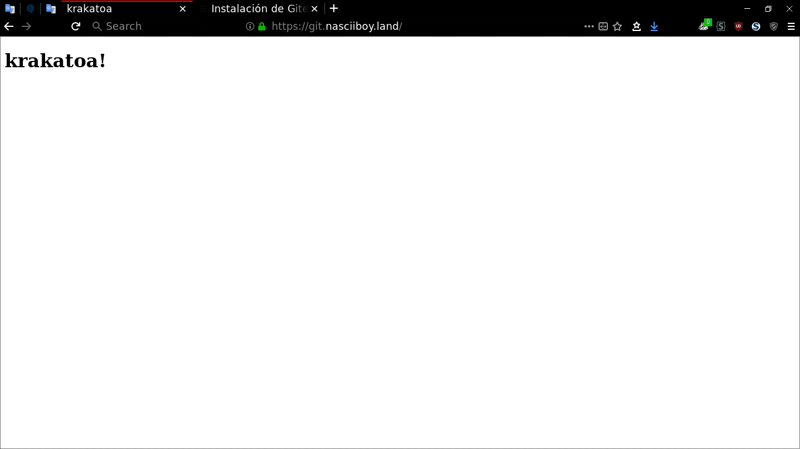
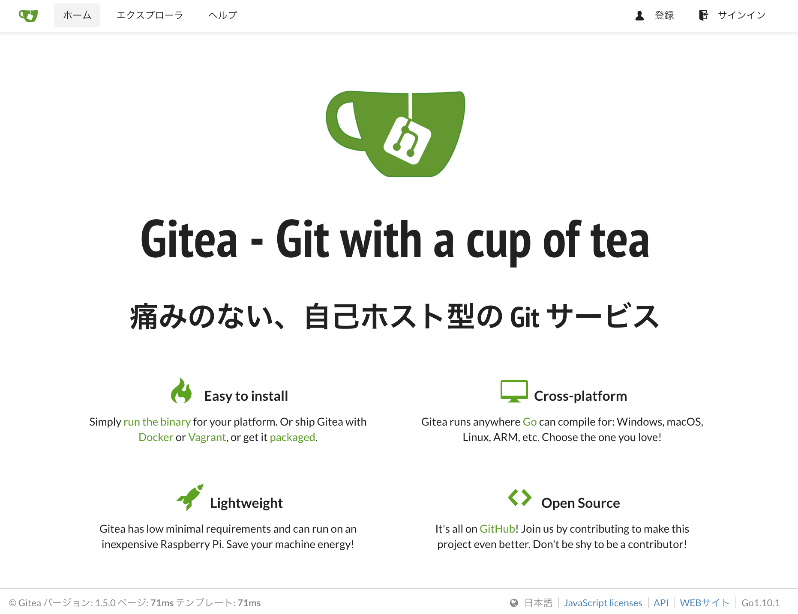

∞.nasciiboy.land
en experimentos improvisados acompañado de cereal remojado, habia estado probando “montar servicios” en el dominio “con diagonales” mas o menos asi
nasciiboy.land # dominio
nasciiboy.land/mail # el correo
nasciiboy.land/git # el git
nasciiboy.land/gitea # el gitea
nasciiboy.land/xxx # el sexual
nasciiboy.land/podcast # el audio
pero cuando veia sitios con “los servicios” montados “con puntos”
nasciiboy.land # dominio
www.nasciiboy.land # con el www
mail.nasciiboy.land # el correo
git.nasciiboy.land # el git
gitea.nasciiboy.land # el gitea
xxx.nasciiboy.land # el sexual
podcast.nasciiboy.land # el audio
algo en mi interior se retorcia de envidia y me preguntaba si los administradores contaban con fortunas incalculables como para contratar tantos dominios… o, habia una magia especial que permitiera tal configuracion sin incurrir en gastos economicos
Como no encontre demaciado sobre el asunto y ni de nginx o dns se casi nada, me disponia a contratar un nuevo dominio (con los restos del paypal).
Asi pues pase una bonita mañana evaluando entre los precios y lo gracioso que pudiera ser el nuevo dominio destinado a las pruebas y tambien especulando con lo rentable (o problematico) de comprar un nombre no registrado de alguna marca conocida (casio.xyz)
Cuando estaba seguro que el elegido seria, digamos, chrøma.me llego la
experimentacion colocando git.chrøma.me. La sospecha de que la configuracion
“con puntos” recaia sobre el dns o el servidor fue clara cuando en el resultado
estos se eliminaban para siempre mostrar gitchroma.me. Resumiendo, nada de
puntos en el nombre si no es para el dominio mismo
CNAME
el primer paso fue acudir al gestor de registros DNS (para el caso, contratado con goddady (#no-es-publicidad))
La configuracion que tiene mi dominio es mas o menos asi
| Tipo | Nombre | Valor | TTL |
|-------+--------+----------------------+--------------|
| A | @ | mi.ip-v4.publica.asi | 600 segundos |
| CNAME | www | @ | 1 hora |
| NS | @ | nameserver1.algo | 1 hora |
| NS | @ | nameserver2.algo | 1 hora |
| NS | @ | nameserver3.algo | 1 hora |
el campo CNAME con nombre www hace pensar que ese www en
www.mydominio.algo como que sobra y al servidor dns solo le importan las
palabras antes y despues del ultimo punto en el dominio (nombre.dominio)
entonces supuse que agregando campos CNAME clonando la info para www pero
variando “el punto” seria posible la anelada configuracion
nasciiboy.land # dominio
www.nasciiboy.land # con el www
mail.nasciiboy.land # el correo
git.nasciiboy.land # el git
gitea.nasciiboy.land # el gitea
xxx.nasciiboy.land # el sexual
podcast.nasciiboy.land # el audio
de momento he limitado la prueba solo al “punto git”: registro CNAME, de nombre git
apuntando al valor @
nginx
pero la verdadera magia, no esta (completamente) en los registros DNS, supongo que el peso de dicernir entre cual “subdominio” servir, corre por parte del servidor web y la informacion extra nesesaria (la ip corre por el DNS) viene incluida en algun campo de la peticion al servidor, aunque esto lo dejare en suposicion por no encontrar (preguntandole al internet) un comando para extraer integra toda la informacion de la peticion. (El libro de Go traia un programita, que permitia estraer dicha informacion, pero no voy a poner temas “tan tecnicos” aqui)
asi pues si el servidor dns no es el responsable (ultimo) de “la magia de los puntos”, el experimento podria montarse en nuestra red local con el navegador de costumbre, la linea de comandos y nginx. Solo aclarar que todo esto es mas sencillo (en cuanto a configuracion) de lo que este preludio (o la pesima redaccion) haga parecer
tenemos un servidor nginx configurado por defecto sin php (ni nahh). La web esta
alojada en /var/www/html y su fichero de configuracion esta en
/etc/nginx/sites-available/default. Veamos pues si ademas de nuestro
dominio.algo encontramos la forma de que git.dominio.algo nos muestre una
pagina totalmente distinta
primero creamos una carpeta raiz para “el nuevo sitio”
mkdir /var/www/git
agregamos la pagina de inicio. Con nuestro editor
emacs /var/www/git/index.html
copiamos lo siguiente
<!DOCTYPE html>
<html>
<head>
<meta charset="utf-8">
<title>krakatoa</title>
</head>
<body>
<h1>krakatoa!</h1>
</body>
</html>
ahora agregamos un virtual host en la configuracion de nginx
emacs /etc/nginx/sites-available/git
pegamos lo siguiente
server {
listen 80;
listen [::]:80;
# cambiar mi-sitio.dominio por el pertinente
server_name git.mi-sitio.dominio;
root /var/www/git;
index index.html;
location / {
try_files $uri $uri/ =404;
}
}
habilitamos nuestro sitio
ln -s /etc/nginx/sites-available/git /etc/nginx/sites-enabled/git
systemctl reload nginx
comprobamos que se sirva la pagina del “subdominio”. (Este comando lo corri en mi red local)
$ curl 192.168.1.177 -H "Host: git.mi-sitio.dominio"
<!DOCTYPE html>
<html>
<head>
<meta charset="utf-8">
<title>krakatoa</title>
</head>
<body>
<h1>krakatoa!</h1>
</body>
</html>
mmm, el comando funcionar, funciona… pero no se por que… ni si pueda ser mas o menos mejorable. Solo puedo estar seguro que se optiene el resultado!
Para evitar el anterior comando, podriamos realizar la comprobacion desde el
firefox a git.mi-sitio.dominio

ssl
comprobado el exito de la configuracion “por puntos” solo faltaria agregar el https al “nuevo sitio” mediante lets-encript
en caso de no tener instalado previamente certbot
> apt install python-certbot-nginx
luego
> certbot --authenticator webroot --installer nginx
Saving debug log to /var/log/letsencrypt/letsencrypt.log
Which names would you like to activate HTTPS for?
-------------------------------------------------------------------------------
1: nasciiboy.land
2: git.nasciiboy.land
3: www.nasciiboy.land
...
nos preguntara para cual dominio habilitar HTTPS. Con un numero o varios (separados por comas) especificamos el sitio. Al dejar en blanco (directamente con un enter) se habilitara https para todos los sitios
blank to select all options shown (Enter 'c' to cancel):
Obtaining a new certificate
luego nos pregunta uno a uno donde esta el directorio raiz de cada sitio. Si es la primera vez que se ejecuta certbot solo se presenta una opcion
Select the webroot for nasciiboy.land:
-------------------------------------------------------------------------------
1: Enter a new webroot
-------------------------------------------------------------------------------
ingresamos 1
Press 1 [enter] to confirm the selection (press 'c' to cancel): 1
y luego el directorio raiz del sitio
Input the webroot for nasciiboy.land: (Enter 'c' to cancel):/var/www/html
si son varios los dominios a habilitar, repetimos: primero un numero 1 para nuevo
directorio raiz y luego ingresamos el directorio raiz. En caso de que ya este
presente el directorio, solo ingresamos el numero
Select the webroot for git.nasciiboy.land:
-------------------------------------------------------------------------------
1: Enter a new webroot
2: /var/www/html
-------------------------------------------------------------------------------
Select the appropriate number [1-2] then [enter] (press 'c' to cancel): 1
Input the webroot for git.nasciiboy.land: (Enter 'c' to cancel):/var/www/git
finalmente nos pregunta si queremos que solo se permita https o ambos (http y
https). Prefiero ambas opciones, si es asi ingresar 1
Please choose whether HTTPS access is required or optional.
-------------------------------------------------------------------------------
1: Easy - Allow both HTTP and HTTPS access to these sites
2: Secure - Make all requests redirect to secure HTTPS access
-------------------------------------------------------------------------------
Select the appropriate number [1-2] then [enter] (press 'c' to cancel): 1
...
Congratulations! You have successfully enabled https://nasciiboy.land,
https://git.nasciiboy.land, and https://www.nasciiboy.land
...
y congratulations!
certbot ha modificado la configuracion de nuestros sitios, habilitando el
puerto 443 para https y recargando la configuracion de nginx (creo). Podemos
ver que el fichero de configuracion del sitio git fue modificado agregando lo siguiente
> cat /etc/nginx/available-sites/git
...
listen 443 ssl; # managed by Certbot
ssl_certificate /etc/letsencrypt/live/nasciiboy.land/fullchain.pem; # managed by Certbot
ssl_certificate_key /etc/letsencrypt/live/nasciiboy.land/privkey.pem; # managed by Certbot
ssl_session_cache shared:le_nginx_SSL:1m; # managed by Certbot
ssl_session_timeout 1440m; # managed by Certbot
ssl_protocols TLSv1 TLSv1.1 TLSv1.2; # managed by Certbot
ssl_prefer_server_ciphers on; # managed by Certbot
ssl_ciphers "ECDHE-ECDSA-AES128-GCM-SHA256 ECDHE-ECDSA-AES256-GCM-SHA384 ECDHE-ECDSA-AES128-SHA ECDHE-ECDSA-AES256-SHA ECDHE-ECDSA-AES128-SHA256 ECDHE-ECDSA-AES256-SHA384 ECDHE-RSA-AES128-GCM-SHA256 ECDHE-RSA-AES256-GCM-SHA384 ECDHE-RSA-AES128-SHA ECDHE-RSA-AES128-SHA256 ECDHE-RSA-AES256-SHA384 DHE-RSA-AES128-GCM-SHA256 DHE-RSA-AES256-GCM-SHA384 DHE-RSA-AES128-SHA DHE-RSA-AES256-SHA DHE-RSA-AES128-SHA256 DHE-RSA-AES256-SHA256 EDH-RSA-DES-CBC3-SHA"; # managed by Certbot
...
gitea
finalmente, poco he experimentado con esto y la verdad dudo que llegue a colacarlo en el vps, pero todo esto de tener “subdominios por punto” no era solo para tener “distintas webs”, sino mas bien para montar servicios completos. Para el caso en concreto, una interfaz web para git, que es de lo que va gitea
Tambien podrian ser gitlab u otras, pero gitea se anuncia como ligerito, esta hecho con go-lang y si se usa con SQLite3 como base de datos, pues no requiere dependencias o extenuantes configuraciones
primero crear un usuario (o no) para el experimento (la documentacion oficial propone una mejor configuracion)
# como root
su
# agregar usuario
useradd -c "repos de nascii - nasciiboy@gmail.com" git -m
# cambiar al usuario git
su git
cd
wget -O gitea https://dl.gitea.io/gitea/1.6.0/gitea-1.6.0-linux-amd64
chmod +x gitea
./gitea
ahora redirigimos con nginx git.mi-dominio.algo al servidor de gitea. En /etc/nginx/sites-available/git
modificamos location de la siguiente forma
# location / {
# try_files $uri $uri/ =404;
# }
location / {
proxy_pass http://localhost:3000/;
}
recargamos la configuracion de nginx
systemctl reload nginx
y visitamos nuestra direccion git.mi-dominio.algo. Por defecto el servidor de
gitea escucha en el puerto 3000. Si cambiara el puerto o para experimentar sin
modificar nginx, visitar mi-dominio.algo:3000 o el puerto que este de moda

para configurar gitea vamos a git.mi-dominio.algo/install
aqui he colocado lo siguiente
typo de base de datos > SQLite3
Titulo del Sitio > "zzz.. zZZzz.. ZzzzZ"
Dominio del servidor SSH > git.nasciiboy.land
Gitea HTTP ListenPort > 3000
Gitea Base URL > https://git.nasciiboy.land
de preferencia tambien en Administrator Accont Settings registrar nombre y contraseñå del administrador
luego podremos visitar nuestro perfil y crear repositorios
sorprendentemente la interfaz web funciona! incluso la clonacion por el protocolo https!
> git clone https://git.nasciiboy.land/zorro/187.git
Cloning into '187'...
remote: Counting objects: 4, done.
remote: Compressing objects: 100% (3/3), done.
remote: Total 4 (delta 0), reused 0 (delta 0)
Unpacking objects: 100% (4/4), done.
pero en el clonado con protocolo git aparecio el error Permission denied (publickey). Curioso detalle a revizar, por que precisamente el servidor ssh solo esta habilitado para funcionar con llaves
(nota: no ir a la pagina git (gitea) en nasciiboy.land, por que no esta habilitada… solo es una prueba de concepto)
para terminar, el rendimiento y consumo en una maqunita con un procesador de laptop (de 32 bits) y con 500MB, con nginx, ssh, git-daemon, ddns y el gitea corriendo es mas que aceptable